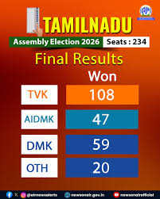

The 2026 Tamil Nadu Assembly Election created a major political change in the state. Actor-turned-politician Vijay and his party TVK (Tamilaga Vettri Kazhagam) emerged as the single largest party in their first election. The election was held for 234 Assembly constituencies, and the majority mark was 118 seats.The result produced a hung assembly because no single party crossed the majority mark on its own. Later, Congress, CPI, CPI(M), VCK, and IUML extended support to TVK, helping the party cross the required majority for government formation.
